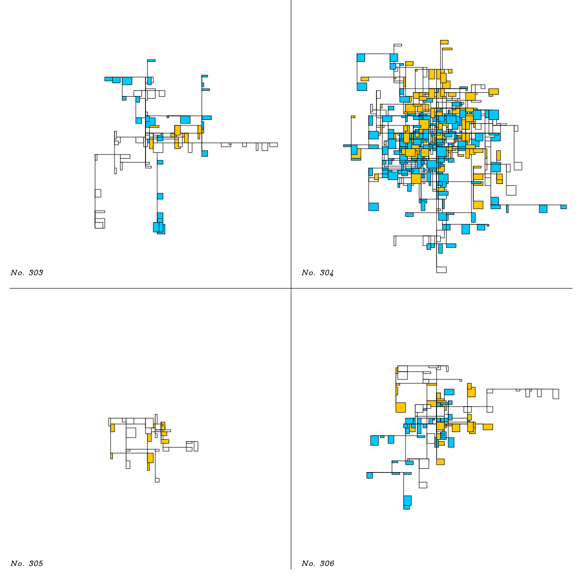

Click me
A Journal of Boxes and Lines. Over 500 pages, volume 1 issue 1 of this generative journal documents thousands of boxenlines constructions. You can use the widget above to make your own constructions by hitting the mouse button or keyboard to refresh.

Download Boxenlines #1